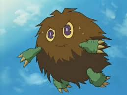

Kuriboh
Kuriboh is the weakest of all Duel Monster creatures but watch out! Kuriboh explode on contact!
- Battle Stats: Level 1, "Dark" attribute, "Special Effect" creature
- Physiology: Large, yellow eyes, green claws/paws, brown fur, 7 lbs, 1′ 6″
- Personality: Selfless, empathetic, cheerful
- Abilities: Kuriboh form deep bonds and communicate telepathically
Kuriboh (Fuzzy Ball) is a fictional creature in the Yu-Gi-Oh! universe that carries special significance for the main character, Yugi Muto. Though easily discouraged if rejected, these creatures put others above themselves, sacrificing themselves so others can get to safety.